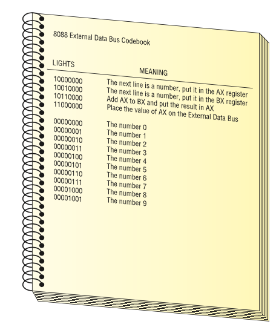
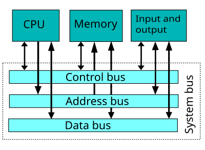

Understanding CPUs
More detail on CPUs. “Guy in Box” analogy, Clock Speed, Codebook, Databuses explained.
{kind=link}
Introduction
Last week one component we learned was the CPU (Central Processing Unit): A complex collection of electronic circuits on one or more integrated circuits (chips).
We learned that the CPU is responsible for:
- Executing the instructions in a software program.
- Communicating with other parts of the computer system
Today we’re going to take a deep dive into how the CPU carries out those responsibilities.
Lesson Overview
More detail on CPUs. “Guy in Box” analogy, Clock Speed, Codebook, data buses explained.
CPU Analogy: Guy in a Box 📦
Let’s start with an analogy: CPUs are a “Guy-in-a-box”. This guy:
- can perform any mathematical function quickly.
- lives in a closed-up box so direct communication is impossible.
Our only way of communicating with this guy is via the External Data Bus. This is 16 light bulbs: 8 visible inside the box, and 8 visible outside the box. There is a light switch for each pair (inside-outside) the box which allows us to flip both the inside and outside bulbs and hence send binary messages!
{kind=link}
{kind=link}
Data bus 💡💡💡
In this analogy this arrangement of light bulbs is called a data bus: a method for transporting data from one component to another using electrical circuits. These “light bulbs”: - can be controlled (turned on or off) by us and by the guy-in-the-box - are synchronized (bulb 1 for us has the same value as bulb 1 for the guy) - we can share messages by setting the light bulbs on off, as long as we: agree on schedule (not changing the lightbulbs at the same time) - the meaning (share the same interpretation of lightbulb being on/off)
Codebook: Agreeing on meaning 📖
How do we share the same meaning?
It’s important to have common definitions for the meaning of the lightbulbs being on/off to understand messages sent by this method CPUs are designed with a codebook (instruction set) that defines the commands that we can give to the guy in the box. This codebook is built into each CPU by its manufacturer and is called “machine code”.
{kind=link}
If CPUs only understand machine code (sequence of 1 or 0), how can this C# code be understood by it?
Console.WriteLine("Hello World!"); Registers
So far, we can send/receive “messages” from the light bulbs. But, in order to “remember” a message, the guy needs at least a few workstations ( registers ) to copy our messages, otherwise the messages will be lost every time the data bus updates.
- Registers are places to store a very small amount of data temporarily
- Registers are usually the around the 1-4x the size of the data bus
- We can give the registers names to distinguish them (AX, BX, CX, DX for example)
{kind=link}
Are CPU registers made of the same technology as RAM?
Clock: Agreeing on schedule ⏰
Now we are ready to communicate with the guy in the box. We can send them the first command by lighting up the bulbs on the data bus.
But how do they know when we have finished setting up the light bulbs?
- We can use a bell activated by a button.
- A real computer uses a special wire called the clock wire (CLK). The CLK wire is turned on and off on a precise and regular schedule. This is called a clock cycle.
- Each time the clock turns on, the state of our lightbulbs is shared with the guy in the box
- The guy then has until the clock turns off to send a message back
- The next time the clock turns on, a new message is sent to the CPU
- The time between each clock cycle is the speed that a CPU can perform a given task
- The maximum number of clock cycles a CPU can handle in given period of time is called the clock speed.
| :::{.callout-tip} |
| # Sample Guy in a Box Problem |
| Using the following codebook, ask the “Guy in a box” to calculate 2+3 |
| You must send a series of commandsto the CPU. The CPU will act on each command and give you an answer. |
| Your answer should be a sequence of numbers you could send to the guy in the box to get the right answer. |
|  |
Solution
10000000 The next line is a number, put it in AX
00000010 The number 2
10010000 The next line is a number, put it in BX
00000011 The number 3
10110000 Add AX to BX and put the result in AX
11000000 Place the value of AX on the external data busA set of commands such as this is called a program. A program is a series of command sent to a CPU in a specific order for the CPU to perform work.
:::
Pipelining 🚥
- Almost all CPU instructions feature a set of 4 stages:
- Fetch : retrieve the instruction, address, and data, write them to registers
- Decode : search for instruction code in codebook, verify it is a real instruction, and that data/address are valid
- Execute : perform the instruction, update registers with results
- Write: write to databus to share results
- Rather than have each instruction repeat all of these steps, we can organize CPUs further by specializing our “guy in a box” for each stage
- This is called pipelining , and it allows for greater efficiency in CPU programming
{kind=link}
CPU Properties 📊
The most important properties that define CPU behavior are speed and bus width: that is, how fast the clock cycle repeats, and how much data per clock cycle the CPU can process.
Clock Speed
We measure CPU speed : in cycles per second, e.g. megahertz (MHz) or gigahertz (GHz).
Hertz, usually written as Hz, denote frequency. 1Hz is “one time per second”, 10Hz is “ten times per second”. We can use SI Prefixes (International System of Unit Prefixes) to compare magnitudes easily.
You will see many of these in computer science over and over again – get to know them well!
| Unit | Meaning | Definition | Examples |
|---|---|---|---|
| Hz | Once per second | 1/s, or 1Hz | 1-2Hz: human heart-rate at rest (1Hz = 60 beats per minute, 2Hz = 120 bpm) 24Hz: framerate of historic cinema 20-60Hz: frequency range for bass notes (C0 = 16.35Hz to C2 = 65.4Hz) 60-144Hz: framerate of most monitors |
| kHz | Thousand times per second | 1000 Hz | 0.1-2kHz: frequency range for midrange notes (A2=0.110kHz, C7=2kHz) 20kHz: maximum frequency audible to human ear 740 kHz: Intel 4004 processor clock speed (1971) |
| MHz | Million times per second | 1000000 Hz | 8MHz: fastest CPU clock speed in the 70s 35MHz: fastest CPU clock speed in the 80s 500-1000MHz: fastest CPU clock speed in the 90s) |
| GHz | Billion times per second | 1000000000 Hz | 2-5GHz: Almost all consumer CPUs in 2024 have base clock speeds in this range 9.117 GHz: fastest CPU clock speed ever recorded (2024) |
CPU Cores
A multi-core SPU means that more than one CPU core is integrated into a single chip, each capable of running parallel processes. This means, in theory, that we multiply the amount of information that can be processes, send and recieved from/to the RAM.
Benefits of Multi-core processors: - Enhancing the multitasking: multiple jobs done at the same time. - Improved performance: Faster and smoother performance. - Energy efficiency: More work can be done with less power.
CPU Threads
CPU cores and threads are closely related but not the same. A core is a physical unit within the CPU that executes instructions, while a thread is a virtual sequence of instructions assigned to a core. Think of cores as workers and threads as the jobs they carry out.
> When CPU has 16 threads, it simply means it can run 16 threads simultaneously.
Bus width
The amount of data processed at a time depends on the “number of lightbulbs” or the width of the data bus
Bus width is measured in bits, e.g. 8-bits, 16-bit, 32-bit, 64-bit, etc.
In actual computers, the CPU receives instructions ,addresses memory , and data on separate buses.
This allows the CPU to send AND receive the following information at the same time:
Control Bus: What command to perform
Address Bus: Where in memory the result should be stored
Data Bus: What data to use to perform the command
 —
The CPU is constantly talking to the RAM and the hardware components. At every clock interval, new instructions are sent through the control bus. Here are a few common instructions:
| Instruction | Description |
|---|---|
LOAD |
Load this value from RAM |
ADD |
Add these two numbers |
STORE |
Save this value to RAM |
COMPARE |
Compare these two numbers |
JUMP IF |
If a condition is true, jump to this next set of instructions (example : if statement) |
JUMP |
Jump to this next set of instructions (without any conditions - example function call) |
IN |
Read data from the input device (example keyboard) |
OUT |
Send data to an output device (example printer) |
All this information, the instruction, the location of the hardware devices are all in binary (machine code)! When you write a program in C#, Java, Python, etc. You are programming in high level programming language that will be compiled into machine code by the compiler of this language (or interpreted by the interpreter of this language).
{kind=link}
Highway analogy: clock Speed vs bus width
- You can double check that you understand a scientific concept by checking what units of measurement that concept is measured by:
- Highway
- Number of lanes: (a number)
- Speed limit: (unit distance per time elapsed, e.g. km/h)
- System bus
- Bus width: (a number of bits, eg a 32-bit processor)
- Bus speed: (unit information per time elapsed, e.g. bits/second)
{kind=link}
CPU Manufacturers 🏭
{kind=link}
- Brand: Refers to company who designed the CPU (often Intel or AMD)
- Tier: Refers to the ranking of this CPU based on their capacilities and performance. Generally the higher the tier the better the pverall performance of the CPU.
- Generation: Tells us how new is this CPU compared to another one. Generally, higher generations within the same tier have improved design.
- Model: It’s a number that uniquely identify a CPU.
- Sufix: Is an added letter which depending on the manufacturer could refer to different properties of the CPU. For example, intel uses “K” to indicate that the CPU is unlocked and can be overclocked. AMD uses X to indicate that this CPU is already slightly overclocked.